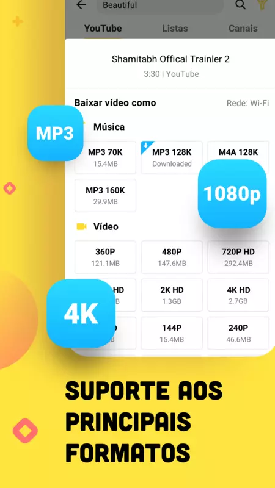

Como Baixar o Snaptube

1. Entre no site do snaptube a partir do link: https://www.snaptubeapp.com/pt/
2. Selecione Baixar
3. Espere chegar em 100%......
No celular, procure um aplicativo com o nome gerenciador de arquivos (Onde o senhorª guarda suas musicas,arquivos etc)
4. No gerenciador de arquivos, procure um arquivo com o nome snaptube,clique nele e aperte em instalar.
5. Pronto, o senhorª já tem o snaptube baixado no seu celular. Agora quando o senhorª quiser baixar algum video, ou até musica já fica mais facil. Lembrando que logo abaixo, tem um passo a passo representado em imagens.
DESENVOLVIDO POR:
Sebastião Rone,Amanda Felix e Vyctor Moura